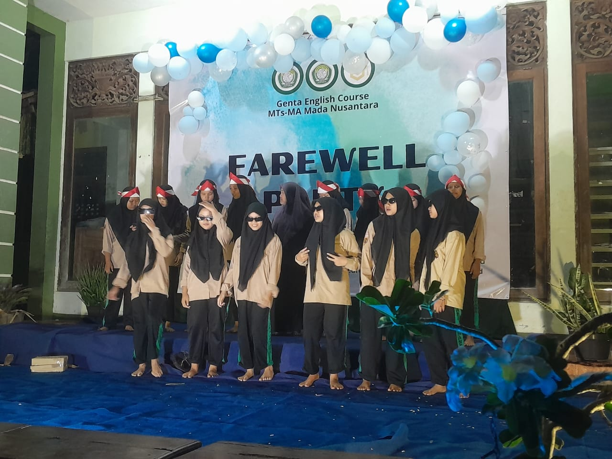
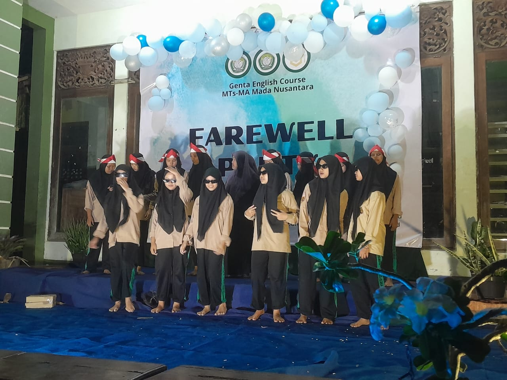

MADRASAH MADA NUSANTARA
Melahirkan Generasi Qurani Berwawasan Global
Melahirkan Generasi Qurani Berwawasan Global
Madrasah Aliyah Mada Nusantara merupakan pendidikan formal yang dikelola oleh yayasan Majlis Ta'lim Tegalsambi. MA Mada Nusantara tidak terlepas dari Sejarah MTs Mada Nusantara. MTs Mada Nusantara bermula dari suatu amanah yang bersifat perintah dari KH. Abdul Karim Malang bahwa sudah saatnya yayasan membuat pendidikan formal yang mandiri.
Sejarah MTs Mada Nusantara dimulai dari awal bulan Desember 2020. Berdirinya MA Mada Nusantara ini dimulai dengan adanya dorongan dari Program Unggulan Tahfidz AL-Qur’an oleh MTs Mada Nusantara. Program Unggulan Tahfidz dimulai dari kelas VII. Mada Nusantara ingin mencetak generasi menjadi tahfidz Al-Qur’an.
Terwujudnya Generasi yang Beriman, Bertaqwa, Berakhlakul Karimah, Berprinsip Ahlussunnah Wal Jama’ah, Berwawasan dan Budaya saing Global.
Ruang kelas yang bersih, sejuk, dan mendukung proses pembelajaran.
Fasilitas laboratorium yang dilengkapi dengan komputer, AC, dan wifi yang mendukung proses pembelajaran peserta didik
Madrasah Mada Nusantara telah menggunakan hartu digital dalam transaksi di kantin sekolah.
Fasilitas masjid di dalam sekolah sebagai pusat ibadah dan pembinaan karakter religius.
 

Alamat: Jl. Sunan Mantingan Desa Tegalsambi RT. 06 RW.02 Kecamatan Tahunan Kabupaten Jepara
Telepon: 082242164602 (Bu Intan)
Email: ma.madanusantara@gmail.com
Jam Operasional: Senin - Sabtu, 07.00 - 12.00